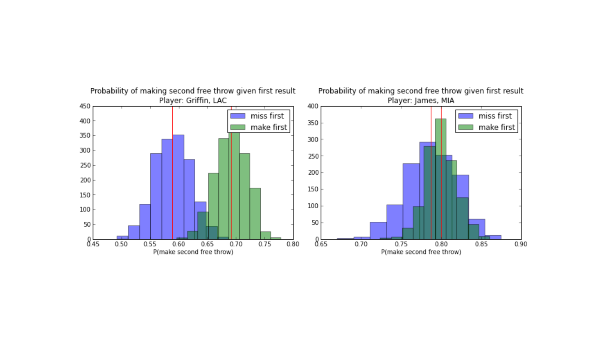

Noisy input data is highly variable, containing mixed-types, and missing values. For example, volume can be measured as cc or ml, or as ** find example . Hash kernels can be used to transform real-world data to feature vectors that can be classified.
A transforms such as bag-of-words is sparse and unwieldy, where all possible instances in a training set are incorporated. A feature vector index is 1 for word present and 0 otherwise.
A hash-kernel is a fixed size array; each feature is mapped to an index using a hash function. The feature values are added to the array at their index. This hash-kernel is now the fixed feature vector. (knowl: The feature vector value is first added or subtracted to another hash-function)
Hash kernels are one-way functions. An example of use of a one-way function comes from the McCarthy puzzle. Imagine a scenario of two countries at war. Spies are sent by one country, how can they be let back in? A public key is given to border guards and private key to spies. A one-way function is easy to compute in one direction, harder in the other. This prevents what is publicly known by the guards to be used to figure out the private key. For example, given a 100-digit number X_100, it is easy to square. X_100 is now some 200 digit number X_200. From X_200, take the middle 100, called Y. If given X, you can easily calculate Y. However, given Y, it is difficult to calculate X; with 50 unknowns on each side, the complexity is 10^100.
feature_vector = [0 for _ in xrange(1 << bits)]
for word in input_text.split():
hash = crc32(word) # CRC-32 hash function, available in the zlib module
index = hash & ((1 << bits) - 1)Use the nth bit, zero-indexed, to determine if we add or subtract one from the index.
sign = (((hash & (1 << bits)) >> bits) << 1) - 1
feature_vector[index] += signbirthday paradox The hash function does not gurantee uniqueness. There may be a large number of collisions, between any given feature.(see birthday paradox) Meaning a single hash kernel element may contain information about more than one feature. However, it is shown by Shi et al, that in one of their data sets, up to 94% of feature collision, only resulted in error rate of 6%. If collision rates adversely affect classification, kernel size can be increased.
Each feature vector is then labeled as alert (1), or not alert (0), based on the entropy measure threshold of the Adaboost algorithm. Each instance is recursively searched. Each path within the recursion is treated as a word in bag-of-words model.
def _add_feature_to_row(self, row, instance, hashables=None):
hashables = hashables or []
if isinstance(instance, dict) or hasattr(instance, "__dict__"):
if not isinstance(instance, dict):
instance = instance.__dict__
for key, feature in instance.iteritems():
self._add_feature_to_row(
row,
feature,
hashables + ["dict_key_%s" % key])
elif isinstance(instance, (list, tuple)):
for ix, feature in enumerate(instance):
self._add_feature_to_row(
row,
feature,
hashables + ["list_index_%d" % ix])
elif isinstance(instance, basestring):
if isinstance(instance, unicode):
instance = instance.encode('utf-8')
for word in instance.split():
self._add_categorical(row, hashables + ["word_%s" % word])
elif isinstance(instance, (int, long)):
self._add_categorical(row, hashables + ["int_%d" % instance])
elif isinstance(instance, float):
self._add_continuous(row, hashables, instance) 1.priors theta_1(prior alert) theta_2(no prior alert) are the probabilities of an alert, given the prior set of vital signs alerts or not, respectively. Given the data_set of large-data and small-data we set the priors at 75% (30/30+10).
pymc.Beta('theta_%i' % i, 30, 10)
thetas = [pymc.Beta('theta_%i' % i, 30, 10) for i in [0,1]]These theta_i are what will be estimated. Specifically, if theta_1 - theta_0 greater than 0, then there is a sequential alert.
2.likelihood Likelihood distribution is calculated as bernoulli random variable, with probability theta_0 or theta_1, of alert or not, given the prior distribution. These probabilities come directly from observation of the sequence data.
p=thetas[0]
p=thetas[1]
observed=True
value=result
second_notalert = [pymc.Bernoulli('shot0_%i' % i, p=thetas[0], value=result, observed=True)
for i, result in enumerate(missed_first)]
second_alert = [pymc.Bernoulli('shot1_%i' % i, p=thetas[1], value=result, observed=True)
for i, result in enumerate(made_first)]3.pyMC model With the prior and likelihood distributions in hand, we can combine them to obtain our posterior probability distribution. This is the distribution of credibility for the various parameter values, namely θi, given the data we observed. The most credible values from this distribution then provide our estimates for θi. The components of the model and their relationships are compiled into a PyMC model, and we run a MCMC sampler to characterize the posterior distribution. In the mcmc.sample statement, iter is the number of samples to take, burn is the number of samples to discard from the beginning of the process, and thin tells the sampler to keep every nth sample.
model = pymc.Model(thetas, second_shot_missed_first, second_shot_made_first)
mcmc = pymc.MCMC(model)
mcmc.sample(iter=5000, burn=1000, thin=10)Prior and likelihood distributions are combined, using theta_i components and their relationships into a pyMC model. A MCMC sampler is run to characterize the posterior distribution.
mcmc.sample
iter #number of samples
burn #number of samples to discard from beginning
thin #keep every nth sample
model = pymc.Model(thetas, second_shot_missed_first, second_shot_made_first)
mcmc = pymc.MCMC(model)
mcmc.sample(iter=5000, burn=1000, thin=10)4.traces, hdi, theta1-theta0 The traces can be thought of as independent random samples from the posterior distribution we are interested in.
theta_0_trace = mcmc.trace('theta_0')[:]
theta_1_trace = mcmc.trace('theta_1')[:]histogram of post.pr.distribution
for trace, label in zip([theta_0_trace, theta_1_trace], ['miss first', 'make first']):
plt.hist(trace, alpha=0.5, label=label)
plt.axvline(x=trace.mean(), c="red")
plt.legend()
player_str = "Player: {player}, {team}".format(player=player, team=team)
plt.title("Probability of making second free throw given first result\n" + player_str)
plt.xlabel("P(make second free throw)")The highest-density-interval(HDI) is analogous to a frequentist Confidence Interval, and can be thought of as a range of credible values. A 95% HDI is the smallest width interval to contain 95% of the posterior probability.
def hdi(trace, cred_mass=0.95):
hdi_min, hdi_max = pymc.utils.calc_min_interval(np.sort(trace), 1.0-cred_mass)
return hdi_min, hdi_maxTo determine if significance between distributions, look at sampled traces. If the HDI does not contain zero(the mean), then theta_1 != theta_2
diff_trace = theta_1_trace - theta_0_trace
plt.hist(diff_trace, alpha=0.5)
plt.axvline(x=diff_trace.mean(), c="red")
hdi_min, hdi_max = hdi(diff_trace)
opts = {'c':'green', 'linestyle':'--'}
plt.axvline(x=hdi_min, **opts)
plt.axvline(x=hdi_max, **opts)
plt.title("Difference in posterior probabilities\n" + player_str)
plt.xlabel("Mean: {:0.3f}\n95% HDI: {:0.3f} - {:0.3f}".format(
diff_trace.mean(), hdi_min, hdi_max))A scatterplot of the MCMC traces for individual samples theta_0 and theta_1 can be used to visualize if the distributions of theta_i are equal. Each trace plotted in a different color but they all come from the same posterior distribution.
fig = figure()
ax = fig.add_subplot(111)
colors = mpl.cm.rainbow_r(np.linspace(0,1,len(theta_0_traces)))
for t_0, t_1, color in zip(theta_0_traces, theta_1_traces, colors):
ax.scatter(t_0, t_1, c=color, alpha=0.5)
ax_lim = ax.axis()
low, high = min(ax_lim[0], ax_lim[2]), max(ax_lim[1], ax_lim[3])
ax.plot([low, high], [low, high], color='k', linestyle='--', linewidth=1)
ax.set_xlim(low, high)
ax.set_ylim(low, high)
ax.set_xlabel('$\Theta_0$')
ax.set_ylabel('$\Theta_1$')
ax.set_title("Scatterplot of $\Theta_i$ estimates")If the prior is 50%, we define a sequential alert, if the second alerts 60% of the time, and 40% after the first reading does not alert.